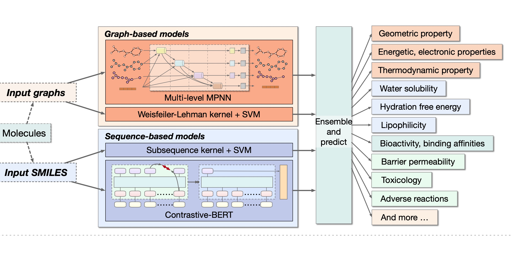

Limei Wang
|
E-mail: limei@tamu.edu |
Short Biography
I am a Research Scientist at Meta. Prior to that, I received my Ph.D. degree in Computer Engineering from Texas A&M University in 2024, under the supervision of Prof. Shuiwang Ji. My research interests include machine learning, deep learning on graphs, and AI for Science.
During Ph.D., I interned at Meta (with Dr. Si Zhang) as a research intern in summer 2023.
Before TAMU, I obtained my bachelor’s degree in Automation at University of Science and Technology of China (USTC) in June 2019.
Research Interests
Machine Learning, Deep Learning
AI for Science, Graph/Geometric ML for Molecules (molecules, proteins, materials, drug discovery, …) [Related papers: SphereNet, ComENet, ProNet, LEFTNet ]
Scalable Methods for Large-Scale Graphs (social network, citation network, …) [Related papers: GraphFM, S3 ]
Graph Generative Models [Related papers: LatentDiff ]
News
 [11/2023] LatentDiff is accepted to LoG 2023.
[11/2023] LatentDiff is accepted to LoG 2023.
[09/2023] LEFTNet is accepted to NeurIPS 2023.
 [08/2023] I am selected as EECS Rising Stars 2023! [Past year’s workshops]
[08/2023] I am selected as EECS Rising Stars 2023! [Past year’s workshops]
[07/2023] Our AI4Science survey paper is released! [AIRS library], [Website]
[01/2023] ProNet is accepted to ICLR 2023.
[09/2022] ComENet is accepted to NeurIPS 2022.
[09/2022] GOOD is accepted to NeurIPS 2022 Datasets and Benchmarks.
[08/2022] Our tutorial Frontiers of Graph Neural Networks with DIG is accepted to KDD. [Hands-on Tutorial]
[06/2022] GraphFM is accepted to ICML 2022.
[02/2022] AdvProp is accepted to Bioinformatics.
[01/2022] SphereNet is accepted to ICLR 2022.
 [12/2021] DIVE@TAMU is ranked #3 on the Open Catalyst Challenge 2021.
[12/2021] DIVE@TAMU is ranked #3 on the Open Catalyst Challenge 2021.
[09/2021] DIG is accepted to JMLR. [DIG library]
[06/2021] DIVE@TAMU is an awardee of KDD Cup 2021 on OGB-LSC. [Technical report], [Code]
Publications
* indicates equal contribution. † indicates equal senior contribution.
|
Cong Fu*, Keqiang Yan*, Limei Wang, Wing Yee Au, Michael McThrow, Tao Komikado, Koji Maruhashi, Kanji Uchino, Xiaoning Qian, Shuiwang Ji |
|
Weitao Du*, Yuanqi Du*, Limei Wang*, Dieqiao Feng, Guifeng Wang, Shuiwang Ji, Carla Gomes, Zhi-Ming Ma |
|
Limei Wang*, Haoran Liu*, Yi Liu*†, Jerry Kurtin, and Shuiwang Ji† |
|
Limei Wang*, Yi Liu*, Yuchao Lin, Haoran Liu, and Shuiwang Ji |
|
Shurui Gui*, Xiner Li*, Limei Wang, and Shuiwang Ji |
|
Haiyang Yu*, Limei Wang*, Bokun Wang*, Meng Liu, Tianbao Yang, and Shuiwang Ji |
|  |
Zhengyang Wang*, Meng Liu*, Youzhi Luo*, Zhao Xu*, Yaochen Xie*, Limei Wang*, Lei Cai*, Qi Qi, Zhuoning Yuan, Tianbao Yang, and Shuiwang Ji |
|
Yi Liu*, Limei Wang*, Meng Liu, Yuchao Lin, Xuan Zhang, Bora Oztekin, and Shuiwang Ji |
|
Meng Liu*, Youzhi Luo*, Limei Wang*, Yaochen Xie*, Hao Yuan*, Shurui Gui*, Haiyang Yu*, Zhao Xu, Jingtun Zhang,
Yi Liu, Keqiang Yan, Haoran Liu, Cong Fu, Bora Oztekin, Xuan Zhang, and Shuiwang Ji |
|
Meng Liu*, Cong Fu*, Xuan Zhang, Limei Wang, Yaochen Xie, Hao Yuan, Youzhi Luo, Zhao Xu, Shenglong Xu, and Shuiwang Ji |
|
Yingying Wang*, Lei Cai*, Wei Chen, Difei Wang, Shi Xu, Limei Wang, Martin A Kononov, Shuiwang Ji, Ming Xian |
Preprints
* indicates equal contribution.
|
Limei Wang, Si Zhang, Hanqing Zeng, Hao Wu, Zhigang Hua, Kaveh Hassani, Andrey Malevich, Bo Long, Shuiwang Ji |
|
Xuan Zhang*, Limei Wang*, Jacob Helwig*, Youzhi Luo*, Cong Fu*, Yaochen Xie*, Meng Liu, Yuchao Lin, Zhao Xu, Keqiang Yan, Keir Adams, Maurice Weiler, Xiner Li, Tianfan Fu, Yucheng Wang, Haiyang Yu, YuQing Xie, Xiang Fu, Alex Strasser, Shenglong Xu, Yi Liu, Yuanqi Du, Alexandra Saxton, Hongyi Ling, Hannah Lawrence, Hannes Stärk, Shurui Gui, Carl Edwards, Nicholas Gao, Adriana Ladera, Tailin Wu, Elyssa F. Hofgard, Aria Mansouri Tehrani, Rui Wang, Ameya Daigavane, Montgomery Bohde, Jerry Kurtin, Qian Huang, Tuong Phung, Minkai Xu, Chaitanya K. Joshi, Simon V. Mathis, Kamyar Azizzadenesheli, Ada Fang, Alán Aspuru-Guzik, Erik Bekkers, Michael Bronstein, Marinka Zitnik, Anima Anandkumar, Stefano Ermon, Pietro Liò, Rose Yu, Stephan Günnemann, Jure Leskovec, Heng Ji, Jimeng Sun, Regina Barzilay, Tommi Jaakkola, Connor W. Coley, Xiaoning Qian, Xiaofeng Qian, Tess Smidt, Shuiwang Ji |
Education
-
Ph.D., Computer Engineering, Texas A&M University, September 2019 - May 2024
-
B.E., Automation, University of Science and Technology of China, September 2015 - July 2019
Services
Conference Reviewer
ACM SIGKDD Conference on Knowledge Discovery and Data Mining (KDD), 2022
International Conference on Machine Learning (ICML), 2022, 2023
Conference on Neural Information Processing Systems (NeurIPS), 2022, 2023
NeurIPS Datasets and Benchmarks Track, 2022, 2023
AI4Science Workshop @ NeurIPS, 2022, 2023
Learning on Graphs Conference (LoG), 2022, 2023
International Conference on Learning Representations (ICLR), 2023, 2024